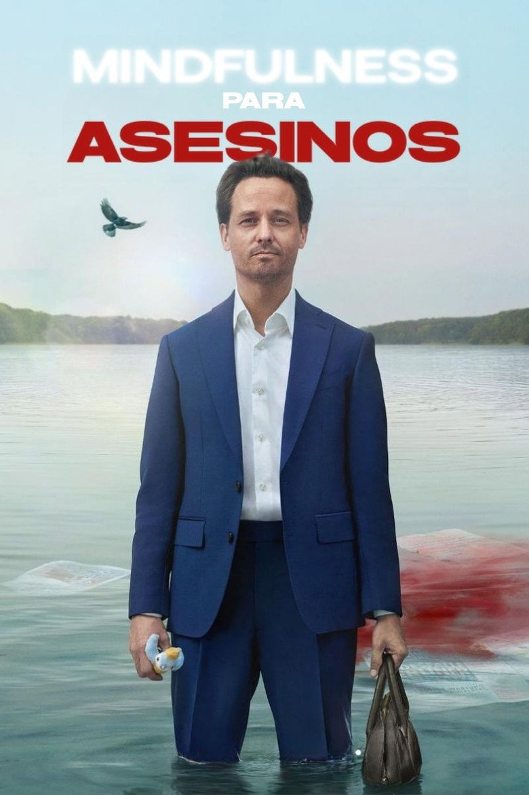
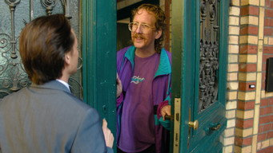
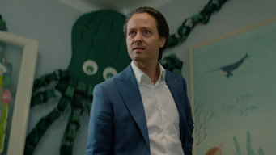
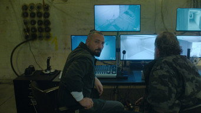
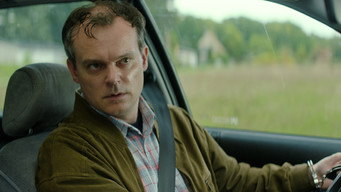

Ocho episodios de media hora. Björn entra al curso para salvar su matrimonio y sale con una técnica para todo. Absolutamente todo.

01
El curso
20248 episodios3 con consecuencias
Björn Diemel es abogado de la mafia, adicto al trabajo y padre a tiempo parcial. Katharina, harta, le da un ultimátum: o hace algo con su vida, o se termina. Ese "algo" es un curso de mindfulness con Joschka Breitner, un coach sereno que enseña a respirar, a aceptar lo que no se puede cambiar y a soltar lo que pesa.
Björn aprende rápido. Demasiado. La primera vez que aplica una técnica fuera del curso, su cliente Dragan deja de ser un problema. Lo que sigue son siete episodios de administrar la solución: esconderla, negociarla, defenderla y, sobre todo, seguir respirando mientras la fiscal Egmann, el clan de Boris y los socios de Dragan hacen preguntas.
Estreno
31 de octubre de 2024Los ocho episodios juntos, en Netflix
Ranking
Número 1 globalTop 10 de Netflix en habla no inglesa
Adapta
Achtsam morden (2019)La primera novela de Karsten Dusse
Creador
Doron WisotzkyDirección de Boris Kunz
Los ocho ejercicios
Los episodios marcados con la línea roja dejan consecuencias.
01Respirar
02Felicidad
03Miedo

04Desvergüenza
05Pánico

06Lluvia de ideas

07Ira

08Muerte
Quién entra en escena
Björn Diemel
Tom Schilling
Entra al curso por su familia. Sale con otra cosa.
Katharina Diemel
Emily Cox
La que lo manda al curso. No imaginaba el resultado.
Dragan Sergowicz
Sascha Alexander Geršak
El cliente. El problema. La primera lección práctica.
Joschka Breitner
Peter Jordan
El coach. Enseña sin preguntar para qué.
Tres momentos (sin spoilers)
01
La primera clase
Björn llega tarde, con el teléfono sonando, y Breitner le pide una cosa: que respire. Es la última vez que algo va a ser simple.
02
El auto de Dragan
Un viaje corto, una llamada de más y una técnica aplicada al pie de la letra. El curso funciona.
03
El lugar seguro
Björn le enseña a su hija Emily a imaginar un lugar seguro. Él también necesita uno, y lo encuentra en el sitio menos recomendable.